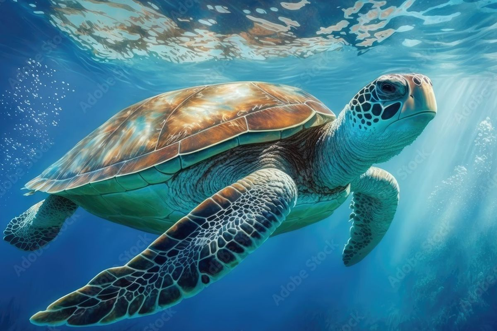
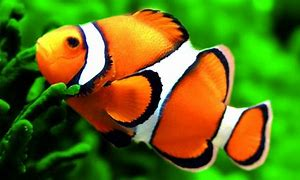
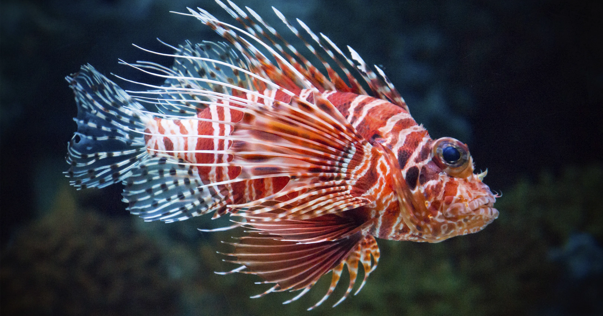
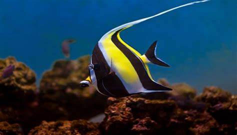

Penyu

Ikan Badut ini dapat dikenali dengan warna jingganya ikan ini tumbuh mencapai 8 cm serta termasuk dalam ikan terpopuler didunia

Lion fish atau volitans adalah ikan berbisa milik keluarga yang Scorpaenidae terjemahan harfiah berarti ikan hias karena bentuknya yang unik dan pola warnanya menarik

Ikan Moorish idol adalah salah satu ikan yang cukup populer di kalangan ara hobiis ikan hias karena bentuknya yang unik dan pola warnanya yang menarik